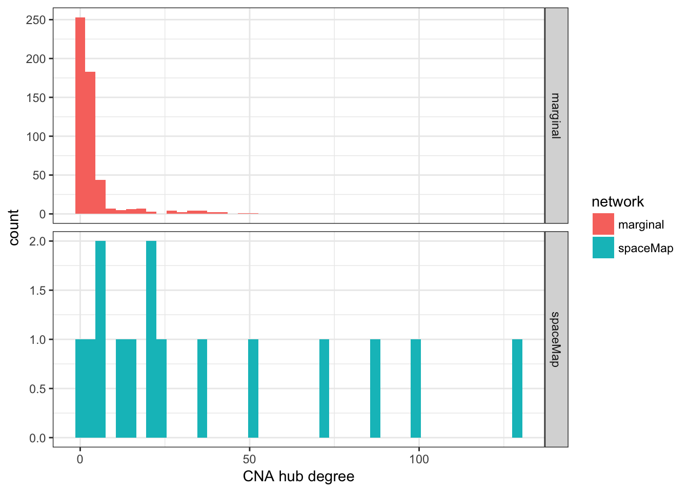

Marginal correlation analysis of proteogenomic breast cancer data is a computationally efficient method that carries the advantage of being applied genome-wide, while the graphical model spaceMap is not yet able to model genome-wide features. However, marginal analysis lacks the same modeling precision of graphical models and is prone to overfitting. The differences in feature resolution and number of features typically input to these two strategies make them difficult to compare. The following presentation compares the marginal analysis approach with spaceMap on a highly-variable subset of proteins and large copy number aberations intervals (CNA) of several megabases—expliclity using the same feature input. This comparison avoids comparing a marginal analysis with gene-level CNA input (as was done in the original BCPLS publication) with a spaceMap analysis with large genomic CNA. The outcome of this analysis clearly highlights the advantages spaceMap has over a marginal analysis when the feature input is the same.
Import the protein and the CNA data that was used to fit spaceMap to the breast cancer data associated with the BCPLS study.
library(spacemap)
data("bcpls")
attach(bcpls)
#useful for reporting enriched hubs/modules later.
library(AnnotationDbi)
library(GO.db)
process_alias <- AnnotationDbi::Term(names(go2eg))
#read protein abundance and CNA data
library(Biobase)
protset <- readRDS(file = "data/prot-expression-set.rds")
y <- t(exprs(protset))
colnames(y) <- yinfo$id
cnaset <- readRDS(file = "data/cna-expression-set.rds")
x <- t(exprs(cnaset))
colnames(x) <- xinfo$idWe will compute the P-values from the Pearson correlation statistic for each CNA–protein and protein-protein pair with these function.
xyPvalues <- function(x, y, method = c("pearson", "spearman"), rdsfile) {
method = match.arg(arg = method, choices = c("pearson", "spearman"))
require(foreach)
pvals <- foreach(p = seq_len(ncol(x)), .combine = 'rbind') %:%
foreach(q = seq_len(ncol(y)), .combine = 'c') %dopar% {
cor.test(x = x[,p], y = y[,q], method = method)$p.value
}
colnames(pvals) <- colnames(y)
rownames(pvals) <- colnames(x)
saveRDS(object = pvals, file = rdsfile)
pvals
}
yyPvalues <- function(y, method = c("pearson", "spearman"), rdsfile) {
method = match.arg(arg = method, choices = c("pearson", "spearman"))
require(foreach)
#generate lower triangle indices to iterate over
rows <- nrow(y)
z <- sequence(rows)
indices <- cbind( row = unlist(lapply(2:rows, function(x) x:rows), use.names = FALSE),
col = rep(z[-length(z)], times = rev(tail(z, -1))-1))
pvals <- foreach(j = seq_len(nrow(indices)), .combine = 'c') %dopar% {
cor.test(x = y[,indices[j,"row"]], y = y[,indices[j,"col"]], method = method)$p.value
}
edge_list <- data.frame(from = colnames(y)[indices[,"row"]], to = colnames(y)[indices[,"col"]], pvalue = pvals)
saveRDS(object = edge_list, file = rdsfile)
edge_list
}Compute the P-values for each protein-CNA pair and save them to file because this takes 20-30 minutes with 7 cores (pre-computed).
pxyfile <- "~/scratch-data/neta-bcpls/marginal/xy_pearson_protein_bcpls.rds"
stopifnot(!dir.exists(basename(pxyfile)))
library(doParallel)
cl <- makeCluster(detectCores() - 1)
registerDoParallel(cl)
pxypval <- xyPvalues(x = x, y = y, method = "pearson", rdsfile = pxyfile)Compute the P-values for each protein–protein pair.
pyyfile <- "~/scratch-data/neta-bcpls/marginal/yy_pearson_protein_bcpls.rds"
stopifnot(!dir.exists(basename(pyyfile)))
pyypval <- yyPvalues(y = y, method = "pearson", rdsfile = pyyfile)Read in the pre-computed P-values from file.
pxypval <- readRDS("~/scratch-data/neta-bcpls/marginal/xy_pearson_protein_bcpls.rds")
pyypval <- readRDS("~/scratch-data/neta-bcpls/marginal/yy_pearson_protein_bcpls.rds")Form the adjacency matrices of the marginal (Pearson correlation) network. Apply the Benjamini-Hochberg correction to every (CNA–protein, protein–protein) interaction and then keep only those interactions that pass an FDR < 0.1. This method produces what we refer to hereafter as the “marginal network” from the significant protein-CNA interactions based on Pearson correlations (FDR < 0.1). Note that an FDR threshold of 0.05 and 0.01 produce the same number of significant edges. An FDR of 0.1 is a reasonable threshold for exploratory network analyses such as this.
adjMatCor <- function(xp, dyp, x, y, thresh = 0.1) {
#partition and index x--y vs y--y
xp <- as.numeric(xp)
yp <- as.matrix(dyp$pvalue)
thresh <- 0.01
nxp <- length(xp)
nyp <- length(yp)
xi <- 1:nxp
yi <- (nxp + 1):(nxp + nyp)
#global adjustment
gp <- p.adjust(p = c(xp, yp), method = "BH")
gyp <- gp[yi]
gxp <- gp[xi]
#make x--y adjacency matrix
mgxp <- matrix(data = gxp, nrow = ncol(x), ncol = ncol(y))
adjxy <- (mgxp <= thresh) + 0
rownames(adjxy) <- colnames(x)
colnames(adjxy) <- colnames(y)
#make y--y adjacency matrix
dyp$fdr <- gyp
make_yy_adj_matrix <- function(el) {
ay <- matrix(data = 0L, nrow = ncol(y), ncol = ncol(y))
rownames(ay) <- colnames(y)
colnames(ay) <- colnames(y)
for(j in seq_len(nrow(el))) {
if (el[j,"fdr"] <= thresh) {
ay[el[j,"from"], el[j,"to"]] <- 1L
ay[el[j,"to"], el[j,"from"]] <- 1L
}
}
ay
}
adjyy <- make_yy_adj_matrix(el = dyp)
#return list of adjacency matrices
list(yy = adjyy, xy = adjxy)
}
marg <- adjMatCor(xp = pxypval, dyp = pyypval, x = x, y = y, thresh = 0.1)
#check to make feature labels are correct.
stopifnot(all(colnames(x) == xinfo$id), all(colnames(y) == yinfo$id))Now we will compare the marginal network based on the Pearson correlation and spaceMap-based CNA–protein networks for breast cancer.
Form the marginal network.
imarg <- adj2igraph(yy = marg$yy, xy = marg$xy, yinfo = yinfo, xinfo = xinfo)Import spaceMap’s Boot.Vote network.
pgraphml <- "/Users/bioinformatics/repos/neta-bcpls/neta/spacemap-prot-boot-vote.graphml"
stopifnot(file.exists(pgraphml))
library(igraph)
ig <- read_graph(file = pgraphml, format = "graphml")Subset the marginal network and spaceMap Boot.Vote network into their \(y-y\) and \(x-y\) subnetworks to aid the comparisons. Intersect the two networks to see what is in common.
imargxy <- igraph::subgraph.edges(imarg, eids = E(imarg)[levels %in% "x-y"])
igxy <- igraph::subgraph.edges(ig, eids = E(ig)[levels %in% "x-y"])
imargyy <- igraph::subgraph.edges(imarg, eids = E(imarg)[levels %in% "y-y"])
igyy <- igraph::subgraph.edges(ig, eids = E(ig)[levels %in% "y-y"])
# what is common
iixy <- igraph::intersection(igxy, imargxy)
iiyy <- igraph::intersection(igyy, imargyy)There are 669 CNA–protein edges in the marginal network compared to 585 in spaceMap’s network. The two networks have 59 CNA–protein edges in common. There are 416 protein–protein edges in the marginal network compared to 954 in spaceMap’s network. The two networks have 8 proteins–protein edges in common. Next we compare the CNA hub degree distributions between the two networks.
#plot CNA hub degree distributions.
library(ggplot2)
marg_cna_deg <- degree(imargxy)[V(imargxy)[levels %in% "x"]]
ig_cna_deg <- degree(igxy)[V(igxy)[levels %in% "x"]]
degcna <- data.frame(degree = c(marg_cna_deg, ig_cna_deg),
network = rep(c("marginal", "spaceMap"),
times = c(length(marg_cna_deg),
length(ig_cna_deg))))
ggplot(data = degcna, aes(x = degree, fill = network)) +
geom_histogram(binwidth = 3) + facet_grid(network ~ ., scale = "free") +
xlab("CNA hub degree") +
theme_bw()
There are 234 CNA hubs in the marginal network with 61.1 percent having only one degree. There are 15 CNA hubs in the spaceMap network with 6.7 percent having only one degree. Next, we identify the specific CNA hubs for both networks.
marg_xhubs <- as_ids(V(imargxy)[igraph::degree(imargxy) > 0 & V(imargxy)$levels %in% "x"])
ig_xhubs <- as_ids(V(igxy)[igraph::degree(igxy) > 0 & V(igxy)$levels %in% "x"])The 11 common CNA hubs between marginal and spaceMap networks are consistent with the original BCPLS publication, which reported “5q (loss of heterozygosity (LOH) in basal; gain in luminal B), 10p (gain in basal), 12 (gain in basal), 16q (luminal A deletion), 17q (luminal B amplification), and 22q (LOH in luminal and basal)”. Notably, only 22q is absent from the spaceMap analysis and only 3 small-degree CNA hubs (mean degree of 1.19) from 22q are represented by the marginal analysis. The evidence leaves open the possiblity that the the variance filter applied to the original data may have omitted proteins that are perturbed by 22q; or that the CNA hub-wise FDR filter applied in the original BCPLS study , rather than a global FDR correction, allowed the BCPLS authros to report more CNA hub regions.
| Common CNA hub | spaceMap degree | marginal degree |
|---|---|---|
| 5q34 | 129 | 21 |
| 8q21.2-22.1 | 1 | 1 |
| 10p15.1-15.3 | 86 | 5 |
| 11q13.5-14.1 | 11 | 3 |
| 12q21.1 | 4 | 1 |
| 16p12.1-12.3 | 21 | 3 |
| 16q22.1 | 16 | 2 |
| 16q22.1-22.2 | 72 | 5 |
| 17q12 | 52 | 6 |
| 17q21.32 | 99 | 10 |
| 17q23.1-23.2 | 21 | 2 |
The CNA hubs unique to spaceMap (listed below) are associated with module P1, but are not associated with any specific GO-enriched proteins. Those CNA hubs are:
#as_data_frame(x = ig, what = "vertices")[setdiff(ig_xhubs, marg_xhubs),]
ucna_smap <- xinfo$alias[match(setdiff(ig_xhubs, marg_xhubs), xinfo$id)]
ucna_smap## [1] "5p12-5q11.1" "15q13.1-15.1" "17p11.2" "17p11.2"The CNA hubs unique to the marginal network have generally much smaller degree than the spaceMap network and are represented across 19 chromosomes. In the following table, we list chromosome with the frequency of reported CNA hubs unique to the marginal analysis. The mean degree of the CNA hubs in the marginal network is 2.8589744, while for spaceMap it is 39. The marginal network clearly reports more CNA perturbing the genome, but the effect is more diminished.
ucna_marg <- xinfo$alias[match(setdiff(marg_xhubs, ig_xhubs), xinfo$id)]
ucna_marg_df <- data.frame(cytoband = ucna_marg, id = setdiff(marg_xhubs, ig_xhubs))
ucna_marg_tab <- table(sapply(strsplit(ucna_marg, split = "p|q"), function(x) x[1]))
ucna_marg_tab2 <- as.data.frame(ucna_marg_tab)
ucna_marg_tab2 <- ucna_marg_tab2[with(ucna_marg_tab2, order(Freq, decreasing = T)),]
colnames(ucna_marg_tab2) <- c("Chromosome", "# of CNA hubs Unique to Marginal Analysis")
mean_chr_degree <- function(chr) { mean(degree(imargxy)[as.character(ucna_marg_df$id[grep(chr, ucna_marg_df$cytoband)])]) }
ucna_marg_tab2$`Mean Degree` <- round(sapply(ucna_marg_tab2$Chromosome, mean_chr_degree),2)
knitr::kable(ucna_marg_tab2, row.names = F)| Chromosome | # of CNA hubs Unique to Marginal Analysis | Mean Degree |
|---|---|---|
| 17 | 68 | 1.76 |
| 5 | 34 | 5.48 |
| 11 | 23 | 2.27 |
| 12 | 15 | 1.44 |
| 16 | 15 | 1.50 |
| 14 | 14 | 2.90 |
| 15 | 12 | 1.29 |
| 8 | 9 | 1.00 |
| 2 | 8 | 2.10 |
| 6 | 6 | 1.58 |
| 9 | 5 | 1.17 |
| 10 | 4 | 2.00 |
| 22 | 3 | 1.19 |
| 1 | 2 | 2.12 |
| 18 | 1 | 1.00 |
| 19 | 1 | 1.00 |
| 3 | 1 | 4.04 |
| 4 | 1 | 3.35 |
| 7 | 1 | 1.75 |
Rank the protein and CNA nodes, resptively.
imarg <- rankHub(ig = imarg, level = "y")
imarg <- rankHub(ig = imarg, level = "x")Next label \(x-y\) edges as being regulated in cis or in trans.
library(GenomicRanges)
imarg <- cisTrans(ig = imarg, level = "x-y")We report the top 50 (degree-ranked) CNA hubs for the marginal network. The marginal analysis identifies much less than cis edges than one would expect, which is similar to the spaceMap network. Further the marginal network reports a large number of redundant CNA hubs compared to the spaceMap network, where redundant is defined to be CNA hubs of very close genomic distance and share very similar edges. For example there are at least 5 redundant 17q12 hubs, 2 redundant edges for 17q25, and 3 redundant edges for 6q21.
xhubs <- reportHubs(imarg, top = 50, level = "x")| hub | # cis/ # trans | Potential # cis | cis genes |
|---|---|---|---|
| 5q33.3-34 (160-160 Mb) | 0 / 23 | 1 | – |
| 5q35.3 (180-180 Mb) | 0 / 22 | 6 | – |
| 5q34 (160-170 Mb) | 0 / 21 | 0 | – |
| 5q14.3 (88-89 Mb) | 0 / 18 | 2 | – |
| 5q34 (170-170 Mb) | 0 / 18 | 0 | – |
| 5q33.1-33.3 (150-160 Mb) | 0 / 17 | 8 | – |
| 5q34-35.1 (170-170 Mb) | 0 / 17 | 2 | – |
| 5q35.3 (180-180 Mb) | 0 / 17 | 6 | – |
| 5q35.2-35.3 (180-180 Mb) | 0 / 16 | 8 | – |
| 5q34 (170-170 Mb) | 0 / 15 | 0 | – |
| 5q14.3 (89-91 Mb) | 0 / 14 | 2 | – |
| 5q35.2 (170-180 Mb) | 0 / 14 | 8 | – |
| 5q11.2-14.3 (59-88 Mb) | 0 / 13 | 15 | – |
| 5q23.2-23.3 (130-130 Mb) | 0 / 11 | 4 | – |
| 5q14.3-23.2 (91-130 Mb) | 1 / 9 | 12 | NUDT12 |
| 17q21.32 (46-46 Mb) | 0 / 10 | 14 | – |
| 5q11.2 (58-59 Mb) | 0 / 9 | 6 | – |
| 5q23.2 (130-130 Mb) | 0 / 9 | 3 | – |
| 5q23.3-33.1 (130-150 Mb) | 0 / 9 | 16 | – |
| 5q35.2 (170-170 Mb) | 0 / 9 | 7 | – |
| 17q21.32 (45-46 Mb) | 0 / 8 | 15 | – |
| 5q11.2 (52-53 Mb) | 0 / 7 | 3 | – |
| 5q11.2 (58-58 Mb) | 0 / 7 | 6 | – |
| 5q11.2 (53-56 Mb) | 0 / 6 | 7 | – |
| 5q11.2 (57-58 Mb) | 0 / 6 | 6 | – |
| 5q35.2 (170-170 Mb) | 0 / 6 | 7 | – |
| 5q35.2 (170-170 Mb) | 0 / 6 | 7 | – |
| 17q12 (38-38 Mb) | 4 / 2 | 34 | ERBB2, GRB7, PNMT, MIEN1 |
| 5q11.2 (56-57 Mb) | 0 / 5 | 7 | – |
| 5q35.1 (170-170 Mb) | 0 / 5 | 2 | – |
| 10p15.1-15.3 (0.42-4 Mb) | 0 / 5 | 10 | – |
| 16q22.1-22.2 (68-71 Mb) | 0 / 5 | 13 | – |
| 17q12 (37-37 Mb) | 3 / 2 | 33 | ERBB2, GRB7, MIEN1 |
| 17q12 (37-38 Mb) | 3 / 2 | 34 | ERBB2, GRB7, MIEN1 |
| 17q12 (38-38 Mb) | 3 / 2 | 34 | ERBB2, GRB7, MIEN1 |
| 5q35.1 (170-170 Mb) | 0 / 4 | 2 | – |
| 5q35.1-35.2 (170-170 Mb) | 0 / 4 | 4 | – |
| 5q35.2 (170-170 Mb) | 0 / 4 | 7 | – |
| 17q12-21.1 (38-38 Mb) | 3 / 1 | 34 | ERBB2, GRB7, MIEN1 |
| 17q21.1 (38-38 Mb) | 3 / 1 | 34 | ERBB2, GRB7, MIEN1 |
| 17q25.1 (72-73 Mb) | 4 / 0 | 22 | SLC9A3R1, FDXR, FDXR, WBP2 |
| 17q25.1 (73-74 Mb) | 4 / 0 | 22 | SLC9A3R1, FDXR, FDXR, WBP2 |
| 17q25.1 (74-74 Mb) | 4 / 0 | 22 | SLC9A3R1, FDXR, FDXR, WBP2 |
| 5q11.2 (57-57 Mb) | 0 / 3 | 6 | – |
| 6q16.3-21 (110-110 Mb) | 3 / 0 | 4 | AIM1, PDSS2, C6orf203 |
| 6q21 (110-110 Mb) | 3 / 0 | 4 | AIM1, PDSS2, C6orf203 |
| 6q21 (110-110 Mb) | 3 / 0 | 4 | AIM1, PDSS2, C6orf203 |
| 6q21 (110-110 Mb) | 3 / 0 | 4 | AIM1, PDSS2, C6orf203 |
| 6q23.1-23.2 (130-130 Mb) | 0 / 3 | 3 | – |
| 10p14-15.1 (4-12 Mb) | 0 / 3 | 13 | – |
The marginal network identified the 5q arm as having high degree and having also perturbed proteins with common functional roles according to the GO-neighbor percentage. This result conforms well to the spaceMap and original BCPLS analysis, which highlight the 5q arm loss in the basal molecular subtype.
hgp <- xHubEnrich(ig = imarg, go2eg = go2eg)
hgp2 <- hgp[hgp$degree > 10,]
kable(hgp2[order(hgp2$neighbor_percentage, decreasing = T),], row.names = FALSE)| hub | degree | neighbor_percentage |
|---|---|---|
| 5q23.2-23.3 | 11 | 0 |
| 5q33.1-33.3 | 17 | 0 |
| 5q33.3-34 | 23 | 0 |
| 5q34 | 21 | 0 |
| 5q34 | 18 | 0 |
| 5q34 | 15 | 0 |
| 5q34-35.1 | 17 | 0 |
| 5q35.2 | 14 | 0 |
| 5q35.2-35.3 | 16 | 0 |
| 5q35.3 | 17 | 0 |
| 5q35.3 | 22 | 0 |
| 5q11.2-14.3 | 13 | 0 |
| 5q14.3 | 18 | 0 |
| 5q14.3 | 14 | 0 |
Use the edge-betweenness algorithm to cluster.
library(igraph)
mods <- cluster_edge_betweenness(imarg)
mod_tab <- table(mods$membership)There are 7 modules of size 15 or greater.
The marginal network GO-enrichment is very limited by any standard—finding only 2 GO-terms enriched—especially so when compared to spaceMap, which found over 40 GO-enriched terms. Both methods identify a common GO-enrichment of proteins involved in transcriptional regulation that are in trans-association with 5q.
outmod <- modEnrich(ig = imarg, mods = mods, levels = "y",
go2eg = go2eg,
prefix = "MARG", process_alias = process_alias)
knitr::kable(outmod$etab, row.names = FALSE)Export for visualization.
filename <- "~/repos/neta-bcpls/neta/marginal-prot-boot-vote.graphml"
#only keep vertices that have edges for visualization
vis <- delete_vertices(graph = outmod$ig, v = V(outmod$ig)[igraph::degree(outmod$ig) == 0])
igraph::write_graph(graph = vis, file = filename, format = "graphml")In comparing the marginal network to spaceMap’s Boot.Vote network, we see the advantages of spaceMap. The commonality of CNA hubs between the two analyses inspires confidence in the novel spaceMap method. Further, spaceMap reports less redundant and more prominent CNA hubs through the use of the group penalty term; this has the effect of potentially narrowing down the region of potential cancer drivers better than a marginal analysis and take this as evidence of spaceMap’s more direct modeling approach. In the \(y-y\) edge space, there is much more GO-enrichment of the spaceMap method, showing it is more useful for extracting biological insight from high-dimensional proteogenomic data than marginal network analysis.
Copyright © 2017 Regents of the University of California. All rights reserved.